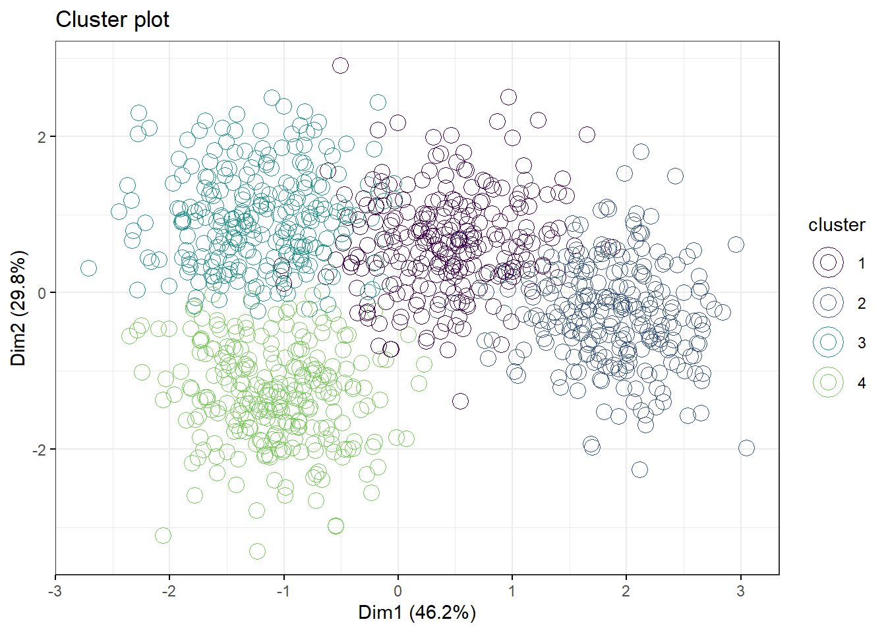
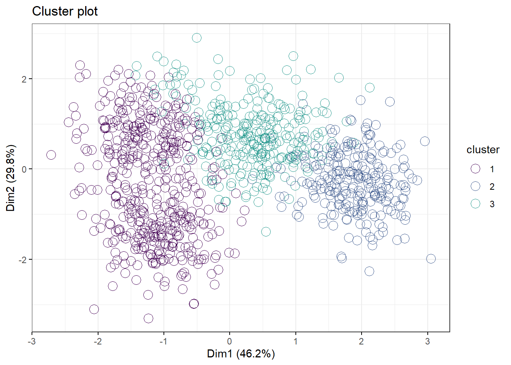

Chapter 7 P Values
You’ll see soon enough that when you run a statistical test function in R, it generates list objects that are chock full of useful information.
Invariably, the researcher’s eyes will go right to the p-value. This is understandable, since most researchers have been trained to associate their own success with a p-value falling below some pre-set \(\alpha\). Who could really blame them for peeking at the p-values first?
The p-value is an instrument by which an important decision will be made. As such, it is worth understanding how that instrument works.
Hypothesis-driven experiments are designed to test the null hypothesis. That null will be rejected if the effect size is large enough. Extreme effect sizes correspond to extreme values of test statistics.
A p-value is the probability that a given test statistic value could be as large as it is, or even more extreme, if the null hypothesis were actually true.
In other words, the p-value is an error probability. It is also a random variable. Which means that it is always possible for an experiment to generate an extreme test statistic by simple random chance. The p-value asserts the probability that this is the case.
One of the reasons I like using R for experimental statistics is that R makes it easy to simulate p-values. Because of that you build an intuitive sense for how they operate. R makes it easy to understand p-values.
7.1 How p-values are calculated
You can think of test statistics as a transformation of sample data. There are many test statistics. The one to use for a given data set depends on the experimental design. Each test statistic has a probability distribution. P-values are derived from the probability distributions of these test statistics and serve as a way to standardize the decision making process irrespective of the experimental design and test statistic.
Probably the simplest test statistic to understand is the z-score. The z-score is a transformation of data from whatever scale it is on, to a standard normal scale. It’s usually appropriate for continuous data. \[z_i=\frac{y_i-\mu}{\sigma}\] Let’s say we have single blood glucose value of 122 mg/dl. What is its p-value? Is the z-score corresponding to that glucose value too extreme to belong in the null distribution of z-scores?
First, the blood glucose values is transformed into a z-score. We’ll say the mean and standard deviation of blood glucose in the sampled population is 100 and 10 mg/dl, respectively. The z-score for a value of 122 is therefore:
## [1] 2.2z-score units are in standard deviations. Thus, a z-score value of 2.2 indicates it is 2.2 standard deviation units greater than the standard normal mean (which is zero, of course).
Next, we’ll pass that z-score value of 2.2 into the standard normal density function, pnorm. We cause the function to produce a p-value for that z-score by using a lower.tail=FALSE argument:
## [1] 0.01390345In the z probability distribution below, the blue shaded region illustrates what this p-value looks like. The p-value covers the probabilities for z-score values of 2.2 and higher. The p-value is thus the area under the curve for the z probability distribution for that value of z and for more extreme values.
ggplot(data.frame(zscore = c(-5, 5)), aes(zscore)) +
stat_function(fun = dnorm) +
stat_function(fun = dnorm,
xlim= c(2.2, 5),
geom = "area", fill="blue")+
ylab("p(z)")+
scale_x_continuous(breaks=seq(-5,5,1))
7.2 How p-values should be interpreted
The question that’s ringing in your ears right now is, “Is a z-score value of 2.2 so extreme we can reject that it belongs to the null distribution of z-scores?”
The answer to that question depends upon what threshold you deem is too extreme. Remember, a threshold is our tolerance for error; in this case, for type 1 error.
If the threshold for an acceptable risk of type 1 error is 5% (\(p < 0.05\)), then let’s see how those look on the z-distribution.
First, let’s calculate z-scores corresponding the area outside 95% of the z-scores. Since extreme z-scores can lay on both the right and the left sides of the z-distribution, which is symmetrical. Therefore we split the 5% in half and use the quantile function qnorm to calculate z-scores for each:
## [1] 1.959964## [1] -1.959964Thus, the 95% confidence limits for the z-scores are ~ +/- 1.96, almost 2 standard deviations from the mean. We plug those values as limits into our plot:
ggplot(data.frame(zscore = c(-5, 5)), aes(zscore)) +
stat_function(fun = dnorm) +
stat_function(fun = dnorm,
xlim= c(1.96, 5),
geom = "area", fill="red")+
stat_function(fun = dnorm,
xlim= c(-1.96, -5),
geom = "area", fill="red")+
ylab("p(z)")+
scale_x_continuous(breaks=seq(-5,5,1))
Any z-score values corresponding to the red-shaded areas would be deemed too extreme to belong to the null. The limit on the right side is 1.96. Therefore, yes, a z-score of 2.2 (\(p=0.0139\)) is too extreme to belong to the standard null distribution.
7.3 Interpretation
Every time we do an experiment we operate on the assumption that our data represent the null. This is analogous to considering a defendant innocent until proven guilty. So we think of test statistic values we calculate from our data, unless proven otherwise, as belonging to the null distribution of test statistic values.
The interpretation of \(p=0.0139\) is the probability that z-score (and its corresponding glucose value of 122 mg/dl) are that large by chance is 0.0139. There’s about a 1.4% chance we are making an error by rejecting the null that it belongs to the \(N(100, 10)\).
7.4 Criticisms of p-values
There are several criticisms of p-values, many of which are legitimate. I’ll address a few key ones here.
- They are too confusing, nobody understands them. I get that. I confess that p-values are a struggle to teach in a way that’s simple and memorable. Especially for students who only consider statistics episodically, perhaps a few times a year.
This year I’m teaching this with a bit more emphasis upon Popper and the merits of null hypothesis falsification as the cornerstone of the scientific method and how p-values fit into that tradition.
Here it is: All statistical tests (the ones I teach in this course) are tests of the null hypothesis. When the test result is extreme, we reject the null. The p-value is the probability we’re rejecting the null in error.
Despite the merit of this particular criticism, p-values are not going away. They are an important inferential tool used by most biological scientists, even if poorly understood and implemented.
Like any tool in the lab, it is incumbant upon the researcher to learn how it works. I think a great way to get a better intuitive understanding for p-values is to play around with the various test statistic probability and quantile distributions in R (pnorm, qnorm, pt, qt, pf, pf, pchisq, qchisq, psignrank, qsignrank etc). Use them to run various scenarios, plot them out…get a sense for how the tools work by using them.
- p-Values poorly protect from false discovery This is undoubtedly true. Since David Colquhoun goes over this in blistering detail I won’t repeat his thorough analysis here. The researcher MUST operate with skepticism about p-values.
Since Colquhoun’s argument is entirely based in simulation it also inspires an approach for dealing with this problem. Through simulation a priori, a researcher can design and run experiments in silico that strikes the right balance between the threshold levels she can control (eg, \(\alpha\) and \(\beta\)) and feasibility in a way that best minimizes the risk of false discovery. Before ever lifting a finger in the lab.
This criticism explains why I am such a strong advocate of Monte Carlo simulation in experimental design. With software like R, there really is no excuse anymore for the researcher being a victim of this problem.
- p-Values aren’t the probability I’m interested in Researchers who raise this criticism generally are interested in something the p-value was never designed to deliver: the probability that their experiment worked.
A p-value doesn’t provide that information because it is an error probability. Specifically, it is the probability of making a type 1 error.
For these researchers, embracing Bayesian statistics is probably a better option. I don’t teach Bayesian statistics in this course for a couple of reasons, but mostly because I don’t understand it well enough to teach it, and I don’t see how it offers a superior approach for experimental research.
- People use p-values as evidence for the magnitude of an effect. Sure, but they are wrong. This is more a criticism of the people who use p-values, and not the p-value. But the criticism raises the point that it is a mistake to rely solely on a p-value to interpret the outcome of an experiment.
A p-value<0.05 only means that there is less than 1 out of 20 chance of having detected an extreme effect when the null is true. A low p-value doesn’t provide evidence that the treatment effect is real. As a result, a p-value can’t provide any information about the magnitude of the treatment effect.
Neither is a low p-value synonymous with scientific significance. A simple example of this comes from 2 way ANOVA F test analysis. When the test suggests a postive result for an interaction effect, that finding supercedes the main effects. Thus, should any main effects also have low p-values they are not scientifically meaningful.
Researchers should therefore analyze p-values in conjunction with other parameters, such as effect sizes and the confidence intervals.